Los eventos del juego se desarrollan en la Facultad de Informática de la Universidad Complutense de Madrid, situado en un futuro post-apocalíptico en el que la facultad ha sido tomada por mutantes y robots tras un accidente nuclear. El jugador deberá avanzar por el nivel, eliminando a las diversas hordas de enemigos y eliminando al jefe final. La cafetería de la facultad ha sido tomada por estos seres, y el personal de la UCM se ha decidido unir a ellos, por lo que el héroe, llamado Mike, deberá eliminar al cocinero para salvar el destino de la FDI. Mike dispone por defecto de una pistola con munición infinita, pero avanzando por el nivel encontrará armas como la M-16, que es un fusil semiautomático de gran daño y velocidad de vala, o la AK 47, que es un fusil automático con un daño medio y una velocidad de disparo alta. Sorteando las balas enemigas y las plataformas, el jugador deberá llegar al final del nivel y enfrentarse al jefe final, el cocinero mutante. ¡Cuidado con el jefe, tiene una gran cantidad de vida y no será nada fáci derrotarlo!
- Moverse a la derecha:
- Moverse a la izquierda:
- Agacharse:
- Dash:
- Saltar:
- Disparar:
- Animaciones PhotonDestructor: https://tiago-melo.itch.io/httpstiago-meloitchiofree-assets-soldier-version-two
- Cocinero: https://rkuhlf-assets.itch.io/restaurant-pixel-art
- Mike (jugador): https://free-game-assets.itch.io/free-3-cyberpunk-sprites-pixel-art
- Animaciones T-1000: https://free-game-assets.itch.io/free-city-enemies-pixel-art-sprite-sheets
- Mike (jugador): https://free-game-assets.itch.io/free-3-cyberpunk-sprites-pixel-art
- Sonidos del juego obtenidos en: https://freesound.org/
- Arcade Music by joshuaempyre: https://freesound.org/people/joshuaempyre/sounds/251461/?
- Tilesets del escenario: https://pixelfrog-assets.itch.io/kings-and-pigs
- Otros tilesets del escenario: https://tilation.itch.io/multi-size-mythical-dungeon-tileset